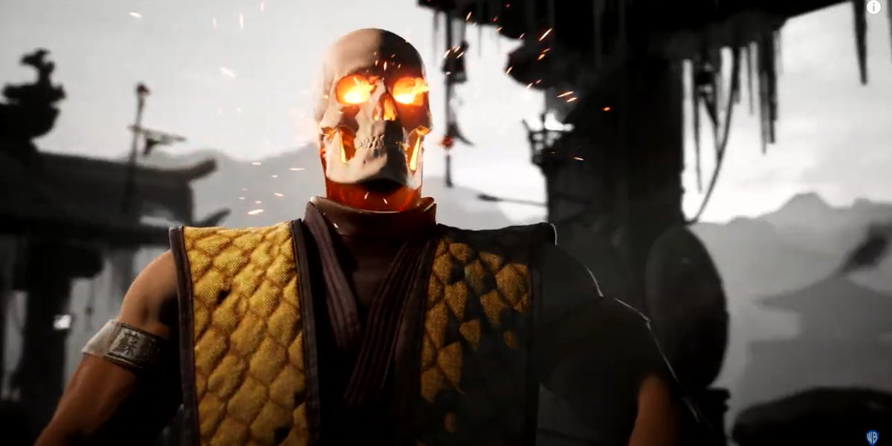
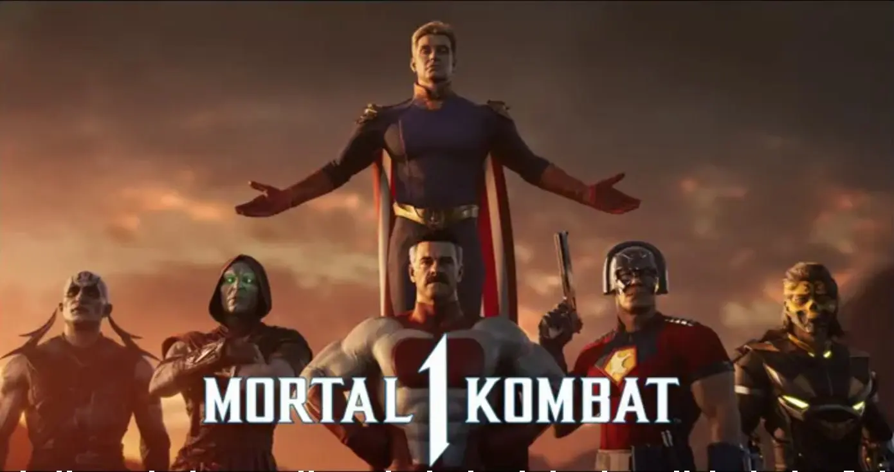

¿Que es Mortal Kombat?
Mortal Kombat pertenece al género de juegos de lucha (fighting games). Este género se caracteriza por la competencia entre dos o más personajes que se enfrentan en un combate cuerpo a cuerpo, utilizando técnicas de lucha y habilidades especiales.
Modos de juego
✶ Modo historia:el Modo Historia es el modo principal de juego en Mortal Kombat. En este modo, los jugadores siguen la trama principal del juego a través de una serie de luchas y cinemáticas. La historia se desarrolla en diferentes capítulos, cada uno con su propio enfoque en un personaje específico.
✶ Modo versus:el Modo Versus es un modo de juego que permite a los jugadores competir entre sí en luchas individuales. Los jugadores pueden elegir a su personaje favorito y luchar contra otro jugador o contra la inteligencia artificial del juego.
✶ Modo torneo:el Modo Torneo es un modo de juego que simula un torneo de lucha. Los jugadores compiten en una serie de luchas consecutivas, y el ganador avanza al siguiente round. El objetivo es llegar a la final y coronarse campeón.
✶ Modo en línea:el Modo En línea permite a los jugadores competir con otros jugadores de todo el mundo a través de Internet. Los jugadores pueden unirse a partidas públicas o privadas, y competir en diferentes modos de juego.
✶ Modo Tower:el Modo Tower es un modo de juego desafiante que consiste en subir una torre de luchas consecutivas. Cada nivel de la torre presenta un oponente diferente, y los jugadores deben vencerlos para avanzar al siguiente nivel. Hay diferentes tipos de torres, cada una con su propio conjunto de desafíos.
✶ Modo Kripta:el Modo Kripta es un modo de juego que permite a los jugadores explorar un calabozo y desbloquear contenido adicional, como personajes, trajes y fatalidades. La Kripta está dividida en diferentes secciones, cada una con su propio conjunto de tesoros y desafíos.
¿Porque Mortal Kombat se considera un juego polemico?
Mortal Kombat es conocido por su contenido explícito y violento, lo que ha generado controversia y debate a lo largo de los años. A continuación, te presento algunos ejemplos de su contenido explícito:
Violencia gráfica
✶ Muertes brutales (fatalities) que incluyen decapitaciones, desmembramientos y otros actos de violencia extrema.
✶ Sangre y gore en abundancia.
✶ Lesiones y heridas gráficas
Contenido maduro:
✶ Nudidad y sensualidad en algunos personajes.
✶ Insinuaciones sexuales y contenido erótico.
Temas maduros
✶ Muerte y asesinato.
✶ Venganza y violencia como solución a conflictos.
✶ Temas oscuros y sombríos.
Entregas
✶ 1. Mortal Kombat (1992)
✶ 2. Mortal Kombat II (1993)
✶ 3. Mortal Kombat 3 (1995)
✶ 4. Mortal Kombat 4 (1997)
✶ 5. Mortal Kombat: Deadly Alliance (2002)
✶ 6. Mortal Kombat: Deception (2004)
✶ 7. Mortal Kombat: Armageddon (2006)
✶ 8. Mortal Kombat (2011)
✶ 9. Mortal Kombat X (2015)
✶ 10. Mortal Kombat 11 (2019)
Impacto Cultural
✶ Mortal Kombat ha sido un tema de debate en la cultura popular.
✶ Ha inspirado parodias y sátiras que critican su contenido explícito.
✶ Ha generado una comunidad de jugadores que disfrutan del juego por su violencia y contenido maduro.

ENTRADAS RELACIONADAS

BattleCats
The Battle Cats es un videojuego de defensa de torres gratuito desarrollado y publicado por....
Last updated 3 mins ago

Minecraft
Minecraft es un videojuego de construcción de tipo «mundo abierto» o en inglés sandbox creado originalmente por....
Last updated 5 mins ago

Half-Life
Half-Life (estilizado HλLF-LIFE) es un videojuego de disparos en primera persona del género ciencia ficción, con toques de techno-thriller, desarrollado por....
Last updated 10 mins ago